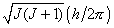

An Introduction to the Electronic Structure of Atoms and Molecules
Professor of Chemistry / McMaster University / Hamilton, Ontario
An Introduction to the Electronic Structure of Atoms and MoleculesProfessor of Chemistry / McMaster University / Hamilton, Ontario
|
R.M. Hochstrasser, Behaviour of Electrons in Atoms, W. A. Benjamin Inc., New York, N.Y., 1964.
The magnitude of the total angular momentum in a many-electron atom is governed by the same rules of quantization as apply to the motions of the individual electrons. Because of this, the addition of the angular momentum vectors of the individual electrons in an atom to give the total angular momentum quantum number denoted by J is not arbitrary but must be carried out in such a way that the magnitude of the resultant vector is expressible in the form  with J = 0, 1, 2, 3 ... An elementary discussion of the manner in which the total angular momentum of an atom is determined by quantum mechanics is given in the above reference.
 |
 |
 |
 |